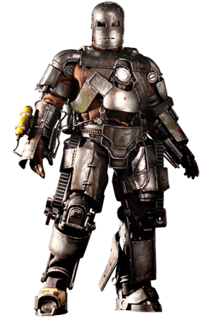

"My armor, it was never a distraction or a hobby, it was a cocoon. And now, I'm a changed man. You can take away my house, all my tricks and toys. But one thing you can't take away... I am Iron Man."
"I'm limited by the technology of my time, but one day you'll figure this out. And when you do, you will change the world. What is, and always will be my greatest creation... is you."
Miniaturized palladium-cored Arc reactor to power Tony's electromagnet that keeps the shrapnel of one of Stark's own missiles from reaching his heart. Capable of generating 3 GJ/s, it can keep Stark's heart running for 50 lifetimes.
The Palladium Arc Reactor Mark III was the reactor used by Tony for six months (the time jump from Iron Man 1 to Iron Man 2) to power his armors and electromagnet. It is eventually replaced by an improved reactor as the palladium was slowly poisoning Tony to death.
This heart shaped reactor is capable of not only working as power source of newest generation of Iron Man armors, but also being capable of storing the nano-particles necessary in the forming of not only the Mark L armor, but all the modules needed depending on situation. This power source allowed Iron Man to kill Outriders in one blast each.
In 2010, Stark travels to war-torn Afghanistan with his friend and military liaison Lieutenant Colonel James Rhodes to demonstrate Stark's new "Jericho" missile. After the demonstration, the convoy is ambushed and Stark is critically wounded and imprisoned by a terrorist group, the Ten Rings. Fellow captive Ho Yinsen, a doctor, implants an electromagnet into Stark's chest to keep shrapnel shards from reaching his heart and killing him.
Stark and Yinsen secretly build a small, powerful electric generator called an arc reactor to power Stark's electromagnet and a suit of powered armor. When the Ten Rings attack the workshop, Yinsen sacrifices himself to divert them while the suit is completed. The armored Stark battles his way out of the cave to find the dying Yinsen, then burns the Ten Rings' weapons in anger and flies away, crashing in the desert. Rescued by Rhodes, Stark returns home to announce that his company will no longer manufacture weapons. In his home workshop, Stark builds a sleeker, more powerful version of his improvised armor suit as well as a more powerful arc reactor.
Many people in the media thought that Tony Stark was only just an egocentric playboy. As an adult, he was renowned for being casually arrogant, apathetic, callous, and a hedonist who enjoyed the finer things in life, namely drinking, gambling, partying and flirting. His wealth, power, and natural charm allowing him to get just about any woman he wants.
Stark was also known for being exceptionally intelligent, innovative and resourceful, having built a miniaturized Arc Reactor from scratch in Afghanistan. His intellect earned him the "Da Vinci of Our Time" nickname, and his inventions of Stark Industries have revolutionized technology for mankind. Stark matured, gradually becoming more of a team player and less arrogant and cynical.
In spite of his love of the spotlight, the idea of a normal life intrigued Tony greatly as he made attempts to extradite himself from the Iron Man persona and indeed, prior to his involvement in the Infinity War, pondered the possibility of he and Pepper having children together. After the disastrous outcome of the Infinity War, Tony indeed decided to retire and marry Pepper, having a daughter called Morgan Stark.
{kind=link}
{kind=link}
{kind=link}
{kind=link}
{kind=link}
{kind=link}
{kind=link}
{kind=link}
{kind=link}